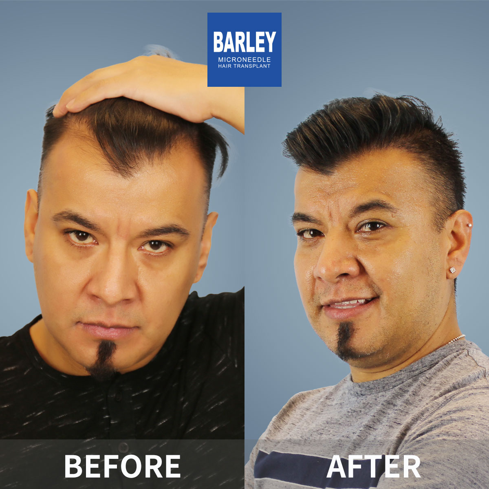
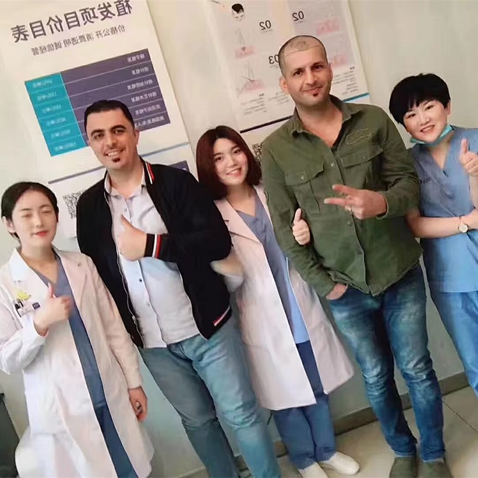

世界級結果的透明定價和卓越價值

在大麥，我們相信透明、直截了當的定價，沒有隱藏費用。我們的植髮費用具有競爭力，但我們從不在品質上妥協。我們使用最先進的微針技術，擁有最有經驗的外科醫生，並提供全面的術後護理—所有這些都包含在您的套裝中。我們認為這不僅是一個手術，更是對您自信和未來的投資。
選擇最適合您需求的解決方案
高達1,500個毛囊單位
1,500-3,000個毛囊單位
3,000+個毛囊單位
為您方便的簡單、透明計算
了解頂級頭髮修復目的地之間的定價差異
了解最終價格包含什麼以獲得完全透明度
簡單、透明、沒有驚喜
與專家外科醫生的完整頭髮和頭皮分析
精確計算您需要多少毛囊單位
清晰、直截了當的價格，沒有隱藏費用
靈活的計畫以適合您的預算
在您方便的時候預約您的門診
全部包含在您的套裝中，無需額外費用
具有證實結果的業界領導者
自2006年以來微針植髮技術的先驅和領導者
遍佈中國主要城市，都具有相同的高標準
創新的微針和種植筆技術，帶來優異結果
受到全球患者信賴，帶來改變人生的結果
為國際患者在整個治療過程中提供完整英語支持
最先進的設施和嚴格的安全協議，讓您安心
看看我們患者實現的驚人轉變


與我們滿意患者的瞬間

成功手術後與我們醫療團隊合影

與我們的醫生慶祝極佳結果

另一位滿意患者分享他們的喜悅

患者出院前與我們專家合影

開心的患者與陳醫生治療後合影

興奮的患者展示他們的新外觀
聽聽我們全球滿意患者的分享
"我在Google和Bing上研究價格幾個月！大麥給了我一個透明、詳細的報價，沒有隱藏費用！這項投資太值得了！"
"我擔心毛囊單位定價！大麥解釋了一切並根據我的需求客製化！我得到了公平的定價和驚人的結果！"
"透明度對我來說就是一切！大麥給了我每個費用的詳細分解！沒有驚喜！只是改變我人生的驚人結果！"
"我從海外來！大麥給了我一個包含所有費用的全球患者套裝！沒有隱藏費用！體驗太棒了！"
"我在其他診所被報價高得多！大麥給了我更好品質的公平價格！我的結果令人難以置信！有史以來最佳投資！"
"他們甚至幫助付款計畫！讓我這麼容易負擔我的植髮！我的結果很棒！不能再開心了！"
體驗我們現代且舒適的設施

我們最先進的設施

在我們的高級休息室放鬆

無菌且先進

私密且專業

舒適的術後空間

溫馨的入口
找到有關植髮的常見問題答案
聯絡我們進行免費諮詢
15810155700
+86 13730143529
hairtransplant@qq.com